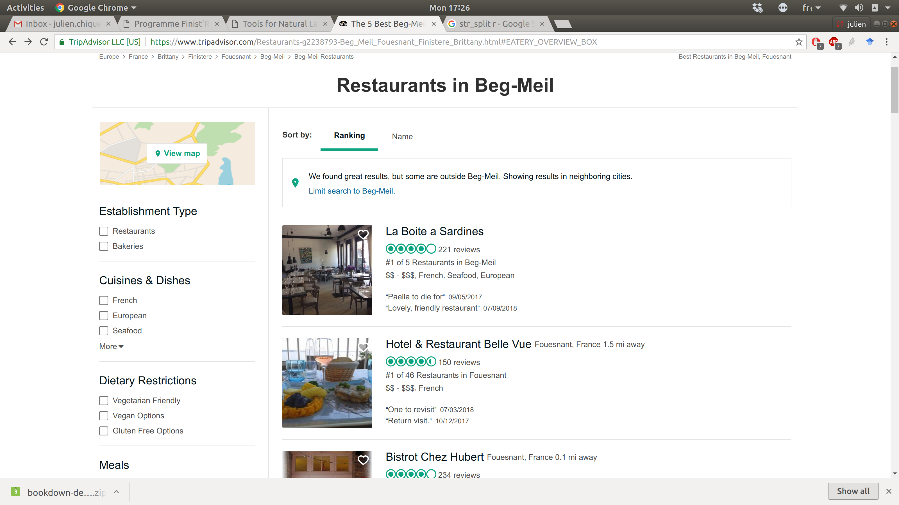
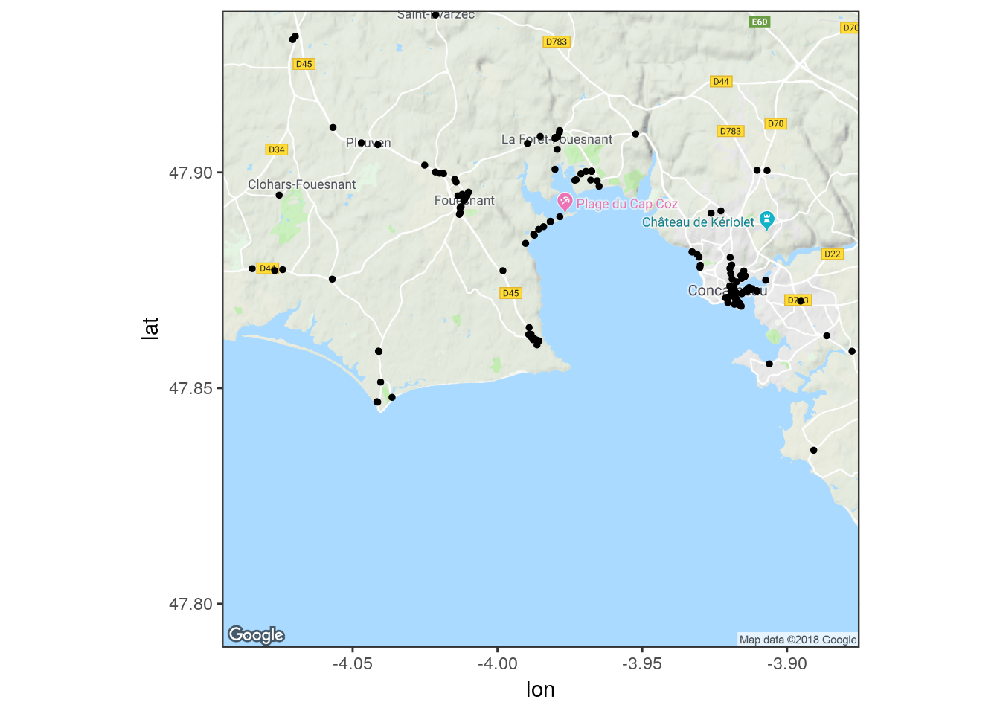

Scraping de nos menus de la semaine
Objectif
- Importer des données géographiques dans R;
- Liste des restaurants TripAdvisor pour la recherche Beg Meil;
- Utilisation du package rvest;
- Utilisation de quelques packages pour la manipulation de chaîne de caractères;
Packages
rm(list = ls())# Bonne pratique
library(rvest)# Pour la lecture des pages HTML
library(parallel)# Pour paralléliser les traitements (c'est long!)
library(stringr)
library(qdapRegex)# Manip de chaîne de caractère
library(ggmap)# Pour le résultat finalGoogle Maps API Terms of Service: http://developers.google.com/maps/terms.Please cite ggmap if you use it: see citation('ggmap') for details.Notre cible

Accès aux noms
url <- "https://www.tripadvisor.fr/Restaurants-g2238793-Beg_Meil_Fouesnant_Finistere_Brittany.html"
webpage <- read_html(url)#Lecture de la page html
nomRestau <- webpage %>% #Argument principal
html_nodes("a.property_title") %>% # Se rendre sur la balise adéquate
html_text()# obtention du texte d'intérêt de la balise
# str_remove_all(pattern = "\n")# mise en forme optionnelleUtilisation de l’explorateur
- *Ctrl+U
- *Clic droit -> Examiner l’élément

Accès aux notes
charNotes <- webpage %>%
html_nodes("span.ui_bubble_rating") %>%
html_attr("alt")
# Equivalent de str_remove
notes <- sapply(strsplit(gsub(",", ".", charNotes), " "), function(x) as.numeric(x[1]))
nR <- length(nomRestau)# Tous les retaus ne sont pas notés..
notes <- c(notes, rep(NA, nR - length(notes)))# Première approximationAccès aux coordonnées
- Les coordonnées ne sont disponibles que sur les sous pages spécifiques
- Accès au lien vers ces sous pages:
hyperRef <- webpage %>%
html_nodes("a.property_title") %>%
html_attr("href")# Obtention d'un attributRecolte des coordonnées
coords <- do.call(rbind, mclapply(hyperRef, function(url){
subpage <- read_html(paste0("https://www.tripadvisor.fr", url))
# Ici, c'est un enfer
# Après fouille et discussion:
# Accees a un gros bloc cible
scriptInfo <- subpage %>%
html_nodes("script")
# Acces au sous bloc contenant la latitude
toCheck <- which(grepl("lat:", scriptInfo))
myLine <- as.character(scriptInfo[toCheck])
# Extraction brute de force et laide
lat <- as.numeric(rm_between(myLine, '\nlat:', ',', extract=TRUE)[[1]])
long <- as.numeric(rm_between(myLine, '\nlng:', ',', extract=TRUE)[[1]])
c(long = long, lat = lat)
}, mc.cores = detectCores()))
output <- data.frame(Restau = nomRestau, Note = notes, data.frame(coords))
head(output) Restau Note long lat
1 \nLa Boite a Sardines\n 4.0 -3.986469 47.86116
2 \nBistrot Chez Hubert\n 4.0 -3.988376 47.86188
3 \nHotel & Restaurant Belle Vue\n 4.5 -3.990278 47.88355
4 \nLe Restaurant La Pointe Cap Coz\n 4.5 -3.978467 47.88971
5 \nBrasserie Le 2\n 4.0 -3.987703 47.86121
6 \nBar / Crêperie de Kervastard\n 4.0 -3.987303 47.86128Problème d’affichage par liste
- Fouille de la page pour obtenir les pages suivantes
mainName <- "https://www.tripadvisor.fr/Restaurants-g2238793-Beg_Meil_Fouesnant_Finistere_Brittany.html"
mainPage <- read_html(mainName)
nombresPages <- mainPage %>%
html_node("div.pageNumbers")%>%
html_nodes("a") %>%
length() + 1
dataOffset <- mainPage %>%
html_node("div.pageNumbers")%>%
html_node("a") %>%
html_attr("data-offset") %>%
as.numeric()
allWebPages <- sapply(seq(0, (nombresPages - 1) * dataOffset, by = dataOffset),
function(i){
if(i == 0)
return(mainName)
paste0("https://www.tripadvisor.fr/Restaurants-g2238793-",
"oa", i,
"-Beg_Meil_Fouesnant_Finistere_Brittany.html")
})library(parallel)# Pour paralléliser les traitements (c'est long!)
myFinalData <- do.call(rbind.data.frame, lapply(allWebPages, function(url){
webpage <- read_html(url)#Lecture de la page html
nomRestau <- webpage %>% #Argument principal
html_nodes("a.property_title") %>% # Se rendre sur la balise adéquate
html_text()# obtention du texte d'intérêt de la balise
# str_remove_all(pattern = "\n")# mise en forme optionnelle
hyperRef <- webpage %>%
html_nodes("a.property_title") %>%
html_attr("href")
charNotes <- webpage %>%
html_nodes("span.ui_bubble_rating") %>%
html_attr("alt")
# Equivalent de str_remove
notes <- sapply(strsplit(gsub(",", ".", charNotes), " "), function(x) as.numeric(x[1]))
nR <- length(nomRestau)# Tous les retaus ne sont pas notés..
notes <- c(notes, rep(NA, nR - length(notes)))# Première approximation
coords <- do.call(rbind, mclapply(hyperRef, function(url){
subpage <- read_html(paste0("https://www.tripadvisor.fr", url))
scriptInfo <- subpage %>%
html_nodes("script")
toCheck <- which(grepl("lat:", scriptInfo))
myLine <- as.character(scriptInfo[toCheck])
lat <- as.numeric(rm_between(myLine, '\nlat:', ',', extract=TRUE)[[1]])
long <- as.numeric(rm_between(myLine, '\nlng:', ',', extract=TRUE)[[1]])
c(long = long, lat = lat)
}, mc.cores = detectCores()))
data.frame(Restau = sapply(strsplit(nomRestau, "\n"), function(x) paste(x, collapse ="")),
Note = notes, data.frame(coords))
}))Obtention d’un objet R au bon format
head(myFinalData) Restau Note long lat
1 La Boite a Sardines 4.0 -3.986469 47.86116
2 Bistrot Chez Hubert 4.0 -3.988376 47.86188
3 Hotel & Restaurant Belle Vue 4.5 -3.990278 47.88355
4 Le Restaurant La Pointe Cap Coz 4.5 -3.978467 47.88971
5 Brasserie Le 2 4.0 -3.987703 47.86121
6 Bar / Crêperie de Kervastard 4.0 -3.987303 47.86128begMeil = c(lat = 47.863843, lon = -3.9852351)
myMap = get_map(location=begMeil,zoom=12)note : locations should be specified in the lon/lat format, not lat/lon.Map from URL : http://maps.googleapis.com/maps/api/staticmap?center=47.863843,-3.985235&zoom=12&size=640x640&scale=2&maptype=terrain&language=en-EN&sensor=falseggmap(myMap) + geom_point(data=myFinalData, aes(x=long, y=lat),size=1)Warning: Removed 30 rows containing missing values (geom_point).